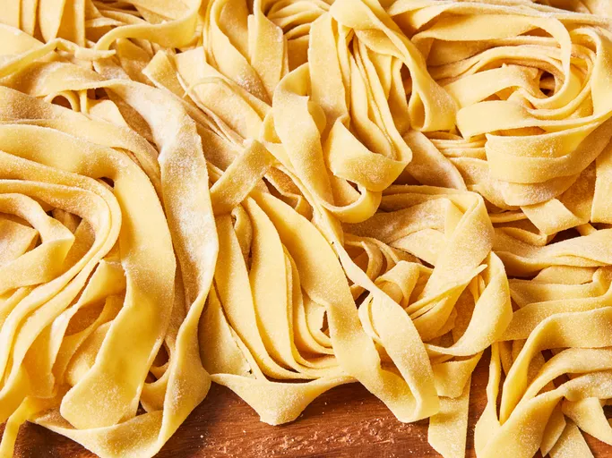

RECIPE FOR MAKING PASTA

Pasta is a type of food made from a mixture of flour, eggs, and water that is formed into different
shapes
and then boiled. Spaghetti, macaroni, and noodles are types of pasta.
Ingredients
You’ll need just five ingredients to make this easy homemade pasta recipe:
- Flour: This homemade pasta recipe starts with two cups of all-purpose flour
- Eggs: Eggs lend fat and moisture to the pasta dough.
- Oil: Two tablespoons of olive oil add moisture and help the dough come together.
- Salt: A teaspoon of salt takes the flavor up a notch.
- Water: Add just enough water to form a smooth, thick dough.
Steps to make homemade delicious pasta
- Make the dough.
- Turn the dough out and knead it for 10 minutes.
- Let the dough rest.
- Divide the dough into balls.
- Use a pasta machine to roll and cut the dough into desired shapes.
- Bring a large pot of generously salted water to a boil, add the uncooked pasta, and stir. Cook until the
pasta is al dente (until it has a slight bite)
- Fresh pasta takes less time to cook than dried pasta, so keep a close eye on it — it should take between two
and five minutes.
- Serve this homemade pasta with your favorite sauce!